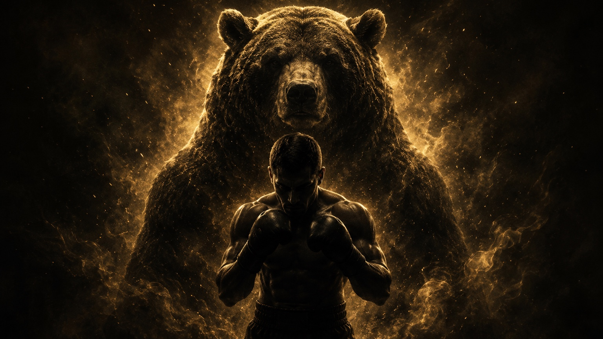
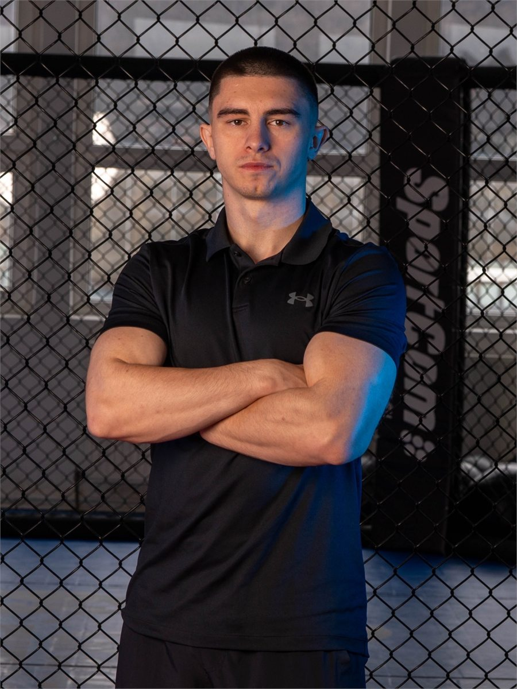
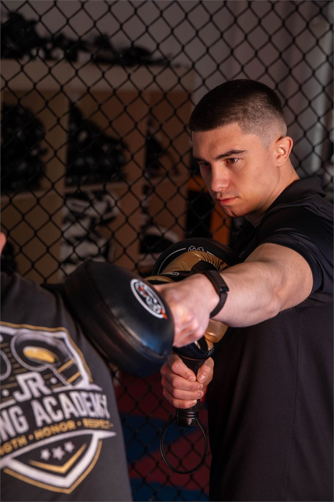

Individual 1–1
Atenție directă, ritm personalizat și corecții clare încă de la primul antrenament.

Box tehnic în Brașov
Antrenamente de box în Brașov, construite pe tehnică, control și progres, alături de Robert Jitaru: boxer profesionist, dublu campion european și antrenor.

Box, nu fitness generic
JR Boxing Academy nu pornește de la spectacol. Pornește de la tehnică, control și un ritm potrivit pentru nivelul tău. Fiecare antrenament are un scop: să construiești încredere, disciplină și mișcare corectă.
Atenție directă, ritm personalizat și corecții clare încă de la primul antrenament.
Energie de grup, obiective similare și un cadru sigur, fără diferențe mari de nivel.
De ce să lucrezi cu Robert
Robert Jitaru vine din competiție: titluri europene U22, zece titluri naționale, Bundesliga și turnee de calificare olimpică.
Antrenamentul nu înseamnă doar oboseală. Înseamnă poziție, distanță, control, timing și progres pe termen lung.
Experiența ca trainer la Profit Point a adăugat ceva important: răbdare, explicații simple și capacitatea de a adapta fiecare pas la omul din față.
Despre mine
Robert Eusebiu Jitaru este boxer profesionist, antrenor de box și fondatorul JR Boxing Academy. A pornit din Făurei, județul Brăila, iar astăzi își desfășoară activitatea în Brașov.
Robert provine dintr-o familie în care boxul a însemnat disciplină, respect și formare. A început la 13 ani, cu o direcție simplă: muncă constantă și seriozitate în sală.
Primele confirmări au venit repede, dar baza carierei nu a fost viteza rezultatelor, ci felul în care a învățat să lucreze: etapă cu etapă, fără scurtături.
Parcursul a continuat la nivel internațional: două medalii de bronz la Campionatele Europene de Tineret, două titluri de campion european U22, turnee internaționale și experiență competițională în Bundesliga.
Participările la campaniile de calificare olimpică au adus un nivel de presiune, pregătire și disciplină care se simte astăzi în modul în care construiește antrenamentele.
Activitatea ca trainer în zona de educație financiară la Profit Point i-a dezvoltat partea de comunicare și lucru cu oamenii. Revenirea în box a venit cu o perspectivă mai matură: nu doar performanță, ci formare fizică și mentală.
Servicii
Individual
Pentru cei care vor progres concentrat, atenție directă și un ritm adaptat nivelului lor.
Grup restrâns
Pentru cei care vor energie de grup, dar într-un cadru clar: niveluri compatibile, obiective definite și siguranță în execuție.
Accesul în Grand Fitness Rulmentul se face prin abonament separat sau prin SanoPass Gold.
Cum lucrez
Înainte de intensitate, trebuie înțeles omul: nivelul, obiectivul, istoricul, felul în care învață și ritmul în care poate progresa.

Scădere în greutate, disciplină, tehnică, încredere, condiție fizică sau pregătire sportivă.
Fiecare ședință este construită în funcție de nivel, coordonare și capacitatea ta de efort.
Progresul vine din repetare corectă, control și acumulare, nu din forțare inutilă.
„Tehnica înainte de intensitate. Controlul înainte de forță. Progresul înainte de ego.”
Filozofie
Boxul este un instrument de dezvoltare fizică și mentală. Te învață să fii prezent, să respiri sub presiune, să controlezi impulsul și să construiești încredere fără gesturi inutile.
Acreditări
Rezultate obținute în competiții internaționale, la nivel de performanță.
Constanță în competițiile interne și ani de pregătire la nivel înalt.
Bundesliga, turnee internaționale și turnee de calificare pentru Jocurile Olimpice de la Rio, Tokyo și Paris.
Tranziție către profesionism, cu o perspectivă matură asupra pregătirii și ghidării.
Galerie
Cadre din competiții naționale și internaționale.
Spațiul în care se desfășoară antrenamentele.
Oameni diferiți, același cadru de lucru: disciplină, implicare și progres.
Atenție directă, corecții tehnice și lucru adaptat nivelului fiecărei persoane.
Ritm, coordonare și atenție la execuție.
Galerie
Testimoniale
Contact
Spune-mi pe scurt ce cauți: antrenament 1–1, grup restrâns, box fără contact sau cu contact controlat. Începem cu o discuție și stabilim cea mai potrivită variantă.